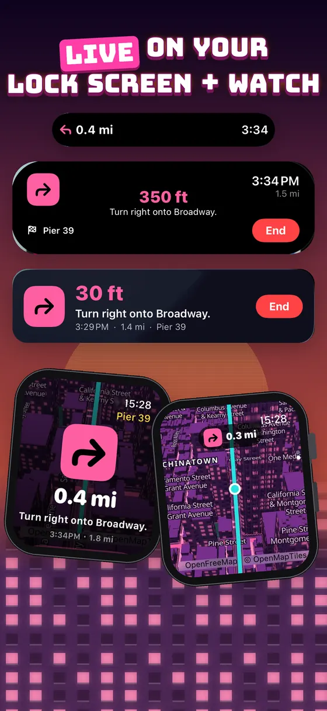

ROAMO 1.0 帮助中心
需要什么帮助？
在 iPhone、iPad、CarPlay 和 Apple Watch 上使用 ROAMO 的分步指南，以及关于购买和隐私的解答。
本译文仅为方便阅读而提供。如与英文版本有出入，以英文版本为准。
一分钟上手
ROAMO 是真正的逐向导航 App。无需注册账户：打开就能出发。
- 允许访问位置，ROAMO 才能显示你的位置并为你导航。
- 搜索或说出目的地：输入地址或地点，轻点麦克风，或选择加油、充电、咖啡等附近类别。
- 预览路线：选择驾车、骑行或步行，比较最快和最短路线。
- 轻点出发。大号转弯卡片、限速旁的当前车速和语音导航带你到达。
22 个地图世界，其中 2 个免费
在地图上轻点切换世界，地面、水域、道路、标签和路线颜色都会重新绘制。Block World 和 Doodle Notebook 永久免费；ROAMO Pro 解锁全部 22 个世界。
- 分别选择白天和夜晚的世界：Neon Night 等暗色世界会在日落后发光。
- 行程中途也能在 iPhone 或 CarPlay 上切换世界。
- 每个世界都可以由专属副驾说话。在 设置 › 副驾语音 中选择：经典语音免费，角色语音包含在 Pro 中。


CarPlay 上的 ROAMO
游戏风格地图、搜索和逐向导航显示在车载屏幕上，并与 iPhone 同步。
- 用数据线或无线方式将 iPhone 连接到汽车。
- 在 CarPlay 主屏幕上轻点 ROAMO。
- 用车载键盘搜索，或选择最近或收藏的地点，然后轻点出发。
- 驾驶时轻点地球按钮切换世界，轻点结束停止导航。
车上看不到 ROAMO？在 iPhone 上打开 设置 › 通用 › CarPlay，选择你的车，轻点 自定，然后添加 ROAMO。

在锁定屏幕和 Apple Watch 上
导航时，下一个转弯会在 App 之外持续跟随你。
- 实时活动：在锁定屏幕和灵动岛上显示下一个转弯和到达时间。在 iPhone 设置 › ROAMO › 实时活动 中允许。
- 小组件：把 ROAMO 添加到主屏幕，轻点一下即可开始回家或去公司的路线。
- Apple Watch：转弯卡片、地图、家、公司和收藏地点尽在手腕。在 iPhone 的 Watch App 中“可用的 App”里安装。
- Siri：说“用ROAMO导航回家”或“用ROAMO查找附近的咖啡”。



打造你的专属风格
- World Studio（Pro）：从 22 个世界中任选一个开始，修改颜色，用你的照片做纹理，并绘制自己的地点图标。轻点切换世界，再选创建你自己的世界。
- 位置标记：为你的车选择游戏风格标记，或用照片制作专属标记。
- 应用图标：行驶满 10、50、100、250、500 和 1,000 公里时解锁 6 个备用图标。见 设置 › 应用图标。
- 分享世界：通过隔空投送、信息或文件发送 .roamoworld 文件。文件绝不经过服务器。


把行程变成视频
每次导航的行程都能变成一段在你的世界里回放路线的视频，可直接发布到 TikTok、Reels 或 Shorts。
- 导航时会记录行程，且只保存在你的 iPhone 上。可在 设置 › 记录行程 中关闭。
- 到达后轻点制作行程视频，或稍后打开 设置 › 行程与视频。
- 选择画幅（9:16、1:1、4:5 或 16:9）、时长、滤镜、标题和音乐。
- 存储到“照片”或分享。使用 Pro 时视频无水印，还可使用你自己的音乐。
你还可以加入一段前置摄像头拍摄的短片（无声音）。只有在你开启后才会拍摄，且只保存在 iPhone 上。

常见问题
如何恢复购买？
打开 ROAMO，点按齿轮按钮进入设置，然后点按恢复购买。请确认你在 App Store 登录的 Apple ID 与购买 ROAMO Pro 时使用的相同。
如何取消订阅？
订阅由 Apple 管理。在 iPhone 上打开设置 › [你的姓名] › 订阅 › ROAMO，然后点按取消订阅。请在续订日期前至少 24 小时取消，以免被收取下一周期费用。删除应用并不会取消订阅。
免费可以用哪些功能？
Block World 和 Doodle Notebook 永久免费，可使用搜索、附近地点和逐向导航。ROAMO Pro 解锁其余 20 个世界。
为什么出现“地图服务已达每日上限”？
搜索和路线使用一个共享的地图服务，每天有请求上限。达到上限时请稍后再试，额度每天都会重置。地图本身和已保存的地点仍可正常使用。
如何更改语言？
打开 ROAMO，点按齿轮按钮，在语言中选择。“系统默认”会跟随 iPhone 的语言。部分文字可能需要重新启动 ROAMO 后才会更新。
如何切换英里/公里或关闭语音？
在 ROAMO 设置的导航中，选择单位和语音（语音、提示音或静音）。也可以在那里隐藏速度表。
蓝点不动或位置不对。
请在 iOS“设置 › 隐私与安全性 › 定位服务 › ROAMO”中确认已允许位置访问，最好开启“精确位置”。移动到开阔地带有助于 GPS 定位。
ROAMO 支持哪些设备？
运行 iOS 17 或更高版本的 iPhone 和 iPad、CarPlay，以及运行 watchOS 10 或更高版本的 Apple Watch。ROAMO Pro 只需购买一次，即可在使用同一 Apple 账户的所有设备上使用。
我的行程和视频会被上传吗？
不会。行程、行程视频、你创建的世界和保存的地点都留在你的设备上。ROAMO 没有账户，也没有接收这些数据的服务器。
实用链接
联系我们
请发送邮件至 info@deeplyai.app，并注明你的 iPhone 型号、iOS 版本和问题的简要描述。我们通常会在两个工作日内回复。
截图为英文版 App。